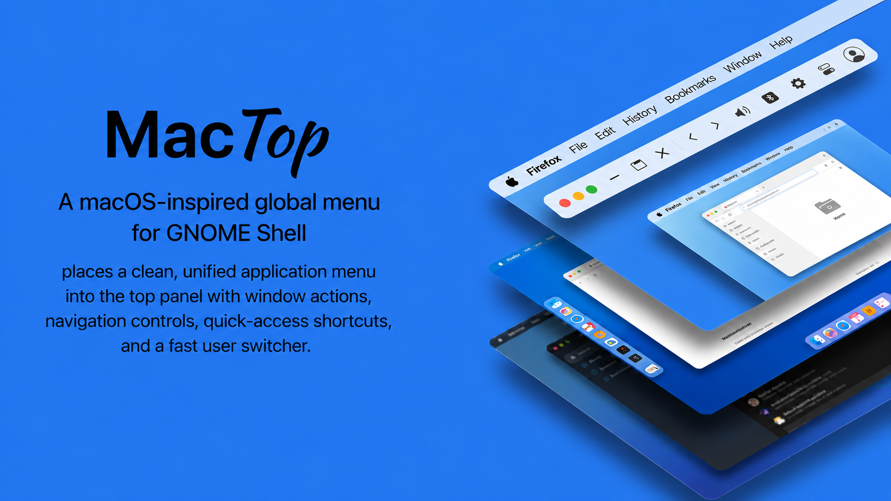
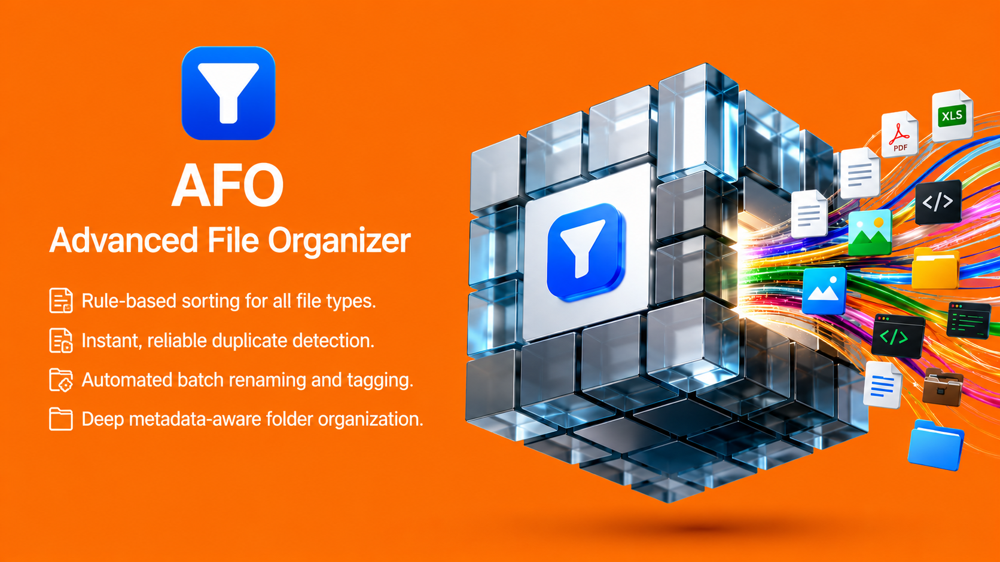
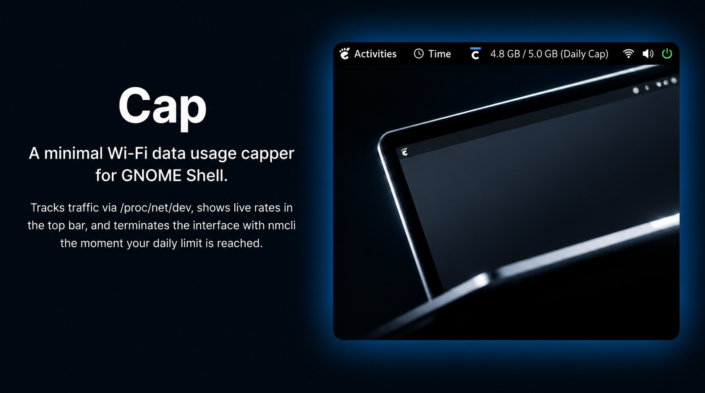
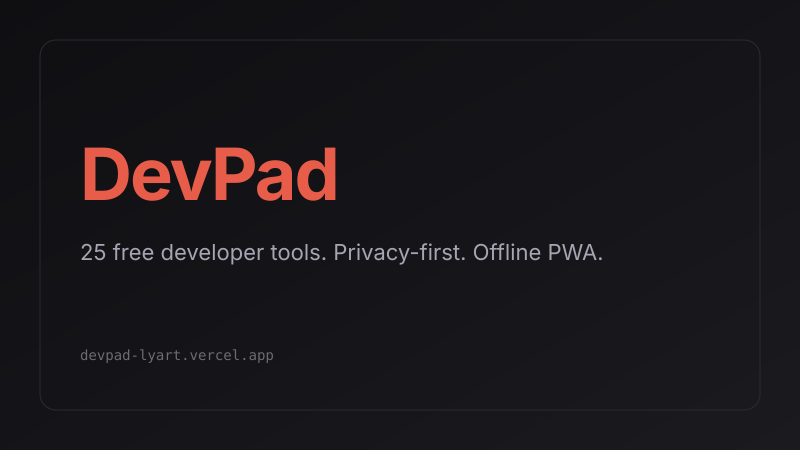
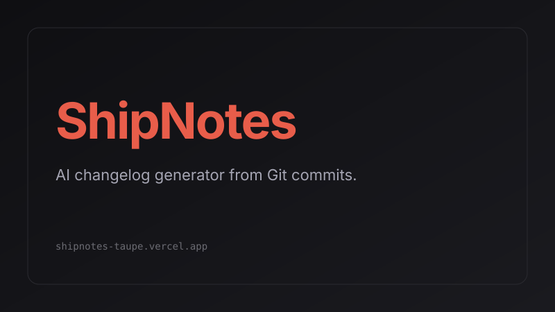
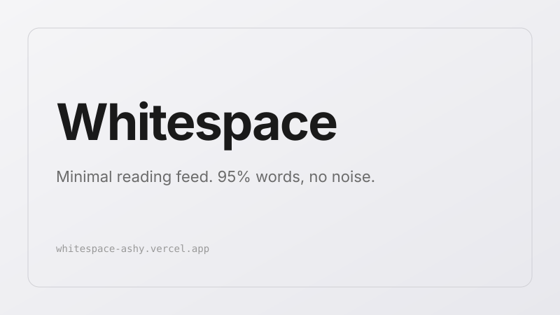

Himath Rajapaksha builds secure software —
Open to remote / hybrid AppSec internships
Final-year BSc (Hons) Cyber Security & Digital Forensics student engineering hardened full-stack systems — RBAC, PostgreSQL row-level security, API hardening, and eBPF-based research into software supply-chain defense.
Selected Work
Shipped systems across security, developer tooling and desktop — each hardened by design.

MacTop
Native macOS-style global menu bar for Linux: per-app File/Edit/View/Window menus, fast user switching, recent items — on Wayland & X11.
Huddl
Secure telehealth platform: low-latency encrypted video over WebRTC, app-layer auth with explicit authorization states for clinical workflows.

AFO — Advanced File Organizer
Real-time file watching with scheduled runs, drag-and-drop React Flow rule canvas, blake3 duplicate detection with quarantine and undo/redo.

Cap
Minimal shell extension tracking daily Wi-Fi usage via kernel counters and disabling Wi-Fi through nmcli once a configurable cap is hit.

KickBlast Fee Calculator
Windows desktop management system with a custom authentication engine, RBAC-protected admin functions and validated SQL Server LocalDB persistence.

Smart CRM
AI-powered SaaS: distributed rate limiting and API throttling to kill DoS/brute-force vectors, signed webhook integrations, strict input validation.

DevPad
Privacy-first developer toolkit running entirely client-side — zero accounts, zero tracking, installable and air-gap usable via service-worker caching.

ShipNotes
LLM pipeline parses Git history into Keep-a-Changelog / GitHub Releases / minimal notes; freemium tiers with quota enforcement, zero-signup start.

Whitespace
Distraction-free, 95%-text reading with curated long-form content, writer/admin publishing workflows, and motion-aware performance-first UI.

SADL — Sentinel Detection Layer
Final-year research: kernel telemetry that watches package installation for supply-chain malware, with sandboxed detonation and multi-tier risk verdicts.
Tooling & Technologies
About
I care about the boundary between software and the people it serves — someone always has to trust it.
Proven foundation across secure software engineering and defensive architecture: access-control models (RBAC, PostgreSQL RLS), multi-tenant data isolation, API rate limiting, webhook signature validation, strict input validation, and tamper-evident auditing — shipped across production full-stack apps, desktop systems, and kernel-level research prototypes.
President · Science Society, D.S. Senanayake College, Colombo 07 (2022)
Junior Colors Award · Scouting (2014)
BSc (Hons) Cyber Security & Digital Forensics — Kingston University
Cryptography & Network Security · Threat Hunting Analysis & Mitigation · Internet Protocols & Services
Pearson BTEC Level 5 HND Computing (Cyber Security) — ESOFT Metro Campus
Distinction · Information Security Management · Applied Cryptography · Digital Forensics · Database Development
Level 3 Diploma in Information Technology — ESOFT Metro Campus
Distinction · Software Engineering · Python & C# · Networking Fundamentals
Hands-on training · Hack The Box
Defensive Operations · DFIR
Advanced Sherlock labs
Incident investigation end-to-end: Brutus, Mango Bleed, Dream Job–2, RomCom — threat-oriented evidence work and mitigation.
Reverse Engineering
SpookyPass challenge
Static and dynamic analysis to defeat binary protections and recover hidden credentials.
Infrastructure Foundations
Linux & Windows security
Core modules on OS internals, access permissions, and hardening fundamentals across both ecosystems.
Contact
Want to get in touch?
Drop a line.
AppSec internships, security review help, or a build — replies go straight to my inbox.